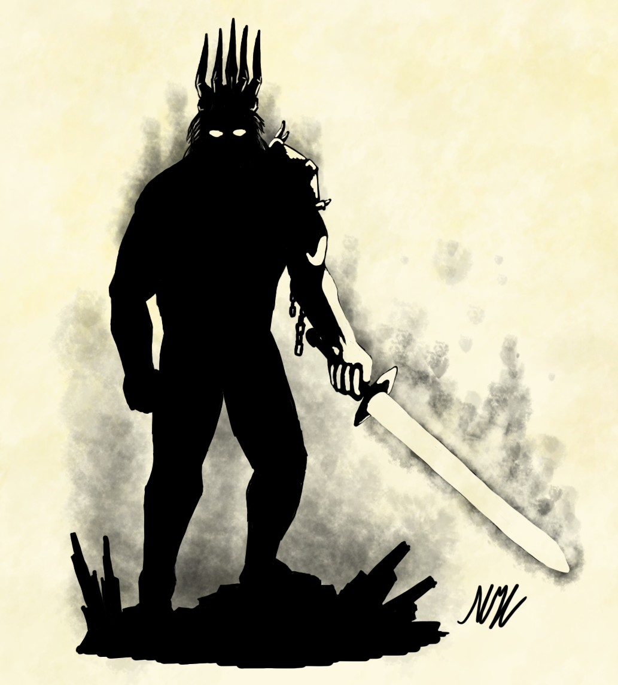

There is no clear name of the sword of Surtr in Peotic Edda or Prose Edda, two offical record of Norse mythology. Surtr hold his sword since he was born, and keep protecting fiery realm Muspelheim untill the Ragnarök come.
In the Peotic Edda, Surtr's sword is describe as the scathe of branches, which also stands for fire in Norse mythology. Someone believe Lævateinn belongs to Surtr, which is not mentioned in most records. And some records shows that it is called Surtalogi.
What ever sword Surtr hold is, he was born with that sword and holding them until the Ragnarök.
Nowdays, people believe the ancient Norse people's idea of a flaming sword comes from the volcano of iceland, which also burns everything on the land.
Lævateinn is a weapon crafted by Loki. It's name means 'Wounding Wand' or 'Wand-of-Destruction'.
Lævateinn has variously been asserted to be a dart (or some projectile weapon), or a sword, or a wand, by different commentators and translators. It is glossed as literally meaning a "wand" causing damage by several sources, yet some of these same sources claim simultaneously that the name is a kenning for sword. Others prefer to regard it as a magic wand (seiðr staff).
Mordern medias mostly believe Laevateinn is a flaming sword, and hold by Surtr, which does not appear to be "true" for ancient Norse mythology.
Lævateinn is the only weapon capable of defeating the cockerel Viðofnir, which is a mythological bird inhabiting the top of the Norse world tree